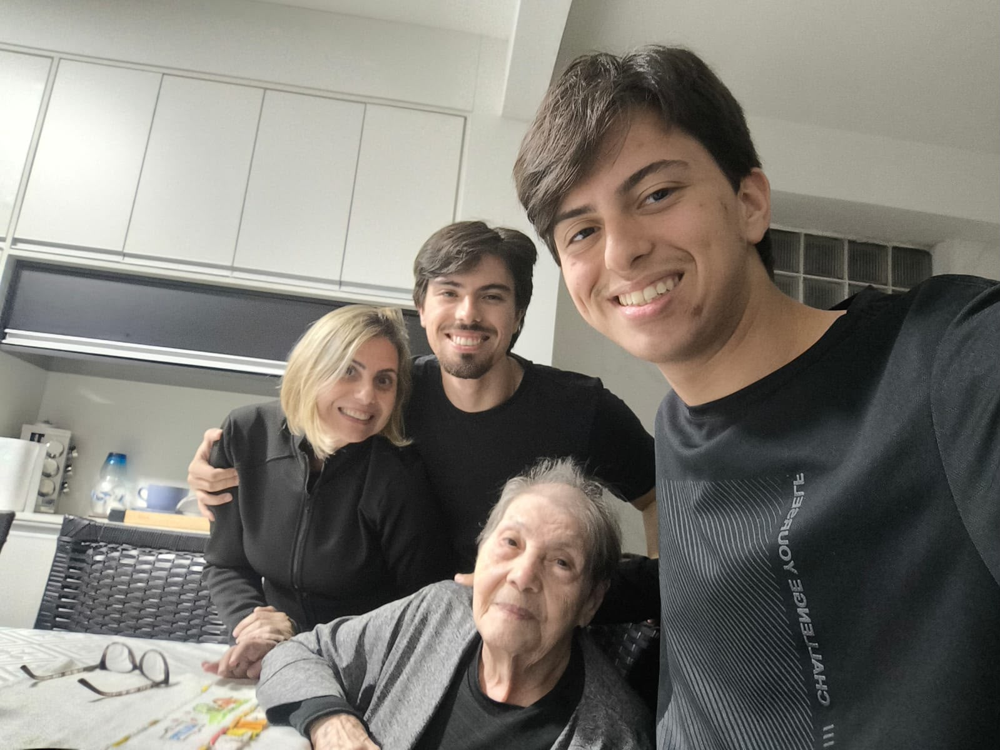
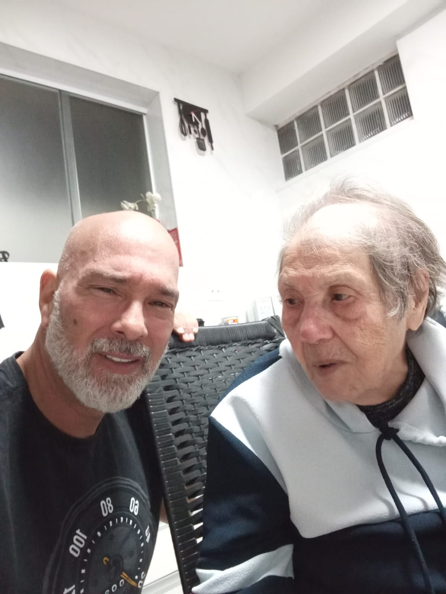
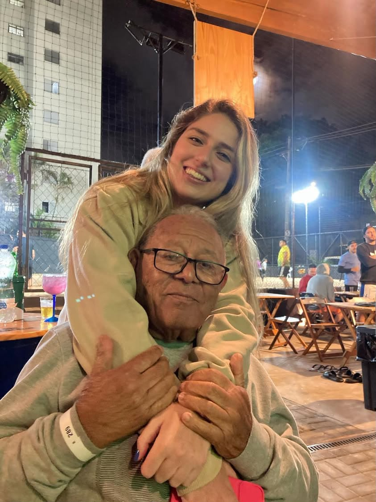
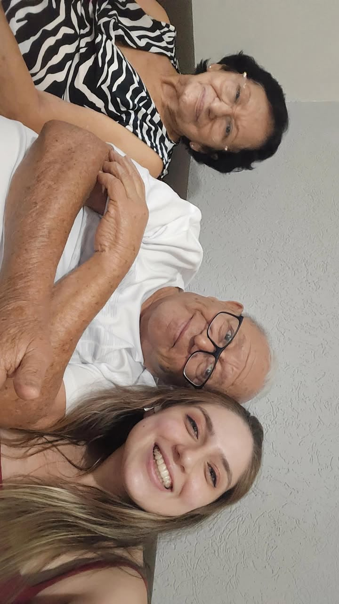
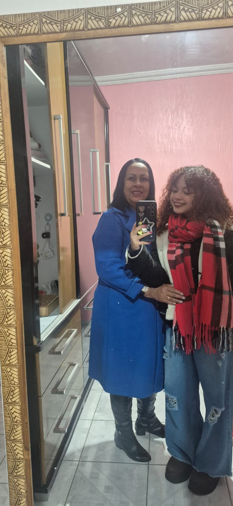
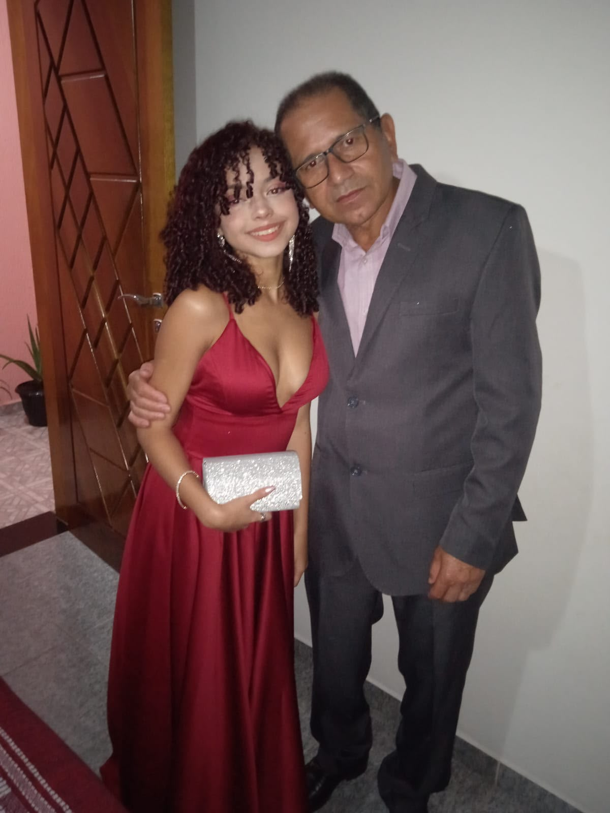

Projeto: Sistema Inteligente de Monitoramento e Aviso de Queda de Idosos Doméstico e em ILPIs
Equipe de Desenvolvimento
Eduarda Alexandre de Salles — RA: 11202320551Gustavo de Paula Souza — RA: 11202130568Paloma Cristina Santana — RA: 11201921396
1. Tema do Trabalho−
Contexto e Cenário
Resumo: Monitoramento óptico passivo em tempo real focado em ambientes residenciais e Instituições de Longa Permanência (ILPIs) para detecção de quedas sem o uso de dispositivos vestíveis.
O envelhecimento populacional traz desafios severos à segurança de idosos. Este projeto aplica câmeras monoculares fixas em tetos ou áreas de tráfego comum para identificar acidentes imediatamente. O diferencial crítico está na garantia de privacidade: o fluxo de imagens passa apenas por processamento matemático local e é descartado imediatamente na borda (*Edge Computing*), prevenindo qualquer vazamento de dados ou imagens íntimas.
Motivação Familiar Real (Histórico de Paloma): A urgência desta solução fundamenta-se diretamente em históricos familiares severos vividos pela integrante Paloma. O núcleo familiar possui um perfil de extrema longevidade, composto por familiares muito idosos: um avô de 90 anos, uma avó de 80 anos, tios-avós de 90, 93 e impressionantes 102 anos, além de sua bisavó com Alzheimer que faleceu com 99 anos. Eventos reais graves já acometeram o grupo, como sua avó materna que residia sozinha e permaneceu sem auxílio imediato após sofrer uma queda; um acidente grave na garagem sofrido por seu avô paterno, que resultou em desmaio e fratura do fêmur em quatro partes; e a bisavó que, após uma queda crítica próxima ao elevador, precisou de transferência permanente para uma instituição especializada devido à perda de mobilidade física.
Por conta desses traumas e da quantidade expressiva de idosos na família, os parentes vivem checando as câmeras de segurança de casa em tempo real para garantir o bem-estar de todos. Essa necessidade diária destaca quão vital é a automação e a velocidade no atendimento inicial por meio da Visão Computacional, aliviando a carga psicológica do monitoramento humano ininterrupto e manual.
Originalidade e Benefícios
Dispositivos de mercado exigem relógios ou botões de pânico, que idosos frequentemente esquecem de carregar, retiram para dormir/tomar banho, ou ficam incapacitados de acionar em traumas severos. Ao transferir a inteligência para a infraestrutura do ambiente através da Visão Computacional, elimina-se qualquer barreira física ou cognitiva do usuário final. Isso minimiza drasticamente o tempo de socorro e otimiza as escalas de cuidadores em ILPIs.
Fase de Empatia: Roteiro de Entrevistas
Consolidação metodológica com 6 perfis estratégicos: 2 usuários idosos finais e 4 familiares responsáveis diretos. Navegue pelas abas abaixo para visualizar as respostas completas de cada entrevistado, consolidadas a partir das fichas de avaliação aplicadas:
Rosa Godoy Canova — 89 anosAvó do Gustavo
P1: Qual o seu maior receio ou dificuldade atual em relação à rotina e segurança?
"Cair da própria altura" — conforme relatado pelos cuidadores (pais do Gustavo).
P2: Como você avalia a eficácia de dispositivos vestíveis?
"Muito bom" — os cuidadores consideram positivos, desde que de fácil usabilidade.
P3: Quais barreiras ou restrições você enxerga quanto à instalação de sistemas baseados em câmeras?
"Nenhuma barreira" — os cuidadores não identificam obstáculos para a instalação.
P4: Se um sensor processasse apenas dados numéricos e silhuetas abstratas, qual seria sua aceitação?
"Total" — aceitação plena da tecnologia com preservação de privacidade.
📋 Dados adicionais: Viúva, reside com 4 familiares, sofreu 1 queda no quarto (tropeçou no próprio pé). Faz uso de anti-hipertensivos, hipoglicemiantes e psicotrópicos.
Gileno Santana — 89 anosAvô da Paloma
P1: Qual o seu maior receio ou dificuldade atual em relação à rotina e segurança?
"Surgimento de algum problema súbito que cause possível dificuldade de comunicação."
P2: Como você avalia a eficácia de dispositivos vestíveis?
"Deve ser de fácil utilização para o idoso, caso seja, torna-se eficaz."
P3: Quais barreiras ou restrições você enxerga quanto à instalação de sistemas baseados em câmeras?
"Não enxerga barreiras (lê-se como seguro)."
P4: Se um sensor processasse apenas dados numéricos e silhuetas abstratas, qual seria sua aceitação?
"Total aceitação."
📋 Dados adicionais: Casado, reside com 1 familiar, sofreu 2 a 5 quedas. Última queda na garagem — fratura de fêmur em 4 partes com perda de consciência. Faz uso de anti-hipertensivos e diuréticos.
Edite Santana — 79 anosAvó da Paloma
P1: Qual o seu maior receio ou dificuldade atual em relação à rotina e segurança?
"Mantê-la em segurança, uma vez que ela é ativa e hipocondríaca. Além disso, tem um quadro de câncer na medula não ativo, artrite e artrose."
P2: Como você avalia a eficácia de dispositivos vestíveis?
"Acredito que possam funcionar, porém SAMU demorou para atender, tivemos que fazer por conta."
P3: Quais barreiras ou restrições você enxerga quanto à instalação de sistemas baseados em câmeras?
"O susto e ficar sob vigia 24h (sem liberdade)."
P4: Se um sensor processasse apenas dados numéricos e silhuetas abstratas, qual seria sua aceitação?
"Gostaria bastante."
📋 Dados adicionais: Casada, reside com 1 familiar, sofreu 2 a 5 quedas. Última queda na sala — desmaio por ansiedade e desidratação. Faz uso de hipoglicemiantes e psicotrópicos.
Edilza Alexandre da Silva — 65 anosAvó da Eduarda
P1: Qual o seu maior receio ou dificuldade atual em relação à rotina e segurança?
"Não conseguir passar o dia inteiro em contato/observação."
P2: Como você avalia a eficácia de dispositivos vestíveis?
"Eficácia moderada. Acredito que necessite ser algo de fácil usabilidade (tanto para o cuidador quanto para o idoso)."
P3: Quais barreiras ou restrições você enxerga quanto à instalação de sistemas baseados em câmeras?
"Não enxerga problemas ou barreiras."
P4: Se um sensor processasse apenas dados numéricos e silhuetas abstratas, qual seria sua aceitação?
"Aceitação total."
📋 Dados adicionais: Casada, reside com 1 familiar (Adevaldo), sofreu 1 queda no quintal — hematomas e perda temporária de sensibilidade nas pernas. Faz uso de diuréticos.
Adevaldo Gomes da Silva — 67 anosAvô da Eduarda
P1: Qual o seu maior receio ou dificuldade atual em relação à rotina e segurança?
"Surgimento de algum problema súbito/ que cause possível dificuldade de comunicação."
P2: Como você avalia a eficácia de dispositivos vestíveis?
"Deve ser de fácil utilização para o idoso, caso seja, torna-se eficaz."
P3: Quais barreiras ou restrições você enxerga quanto à instalação de sistemas baseados em câmeras?
"Não enxerga barreiras (lê-se como seguro)."
P4: Se um sensor processasse apenas dados numéricos e silhuetas abstratas, qual seria sua aceitação?
"Total aceitação."
📋 Dados adicionais: Casado, reside com 1 familiar (Edilza), NÃO sofreu quedas nos últimos 12 meses. Faz uso de psicotrópicos.
Cuidador de Rosa Godoy CanovaPais do Gustavo
P1: Qual o seu maior receio ou dificuldade atual em relação à rotina e segurança do idoso?
"A teimosia" — dificuldade em lidar com a resistência da idosa.
P2: Como você avalia a eficácia de dispositivos vestíveis?
"Positivo" — desde que sejam de fácil usabilidade para a idosa.
P3: Quais barreiras ou restrições você enxerga quanto à instalação de sistemas baseados em câmeras?
"Nenhuma barreira" — os cuidadores não identificam obstáculos.
P4: Se um sensor processasse apenas dados numéricos e silhuetas abstratas, qual seria sua aceitação?
"Aceitação total" — pleno acordo com a solução tecnológica.
📋 Dados adicionais: Rosa tem 89 anos, viúva, reside com 4 familiares. Sofreu 1 queda no quarto (tropeçou no próprio pé). Faz uso de anti-hipertensivos, hipoglicemiantes e psicotrópicos.
📋 Referências para Elaboração do Roteiro de Entrevista▾
O roteiro semiestruturado aplicado nesta fase de empatia foi fundamentado nas seguintes referências acadêmicas e metodológicas:
AALBUQUERQUE, F. C. et al.Abordagens qualitativas para identificação de necessidades de idosos em domicílio. Revista Brasileira de Geriatria e Gerontologia, v. 22, n. 3, 2019.
→ Orienta sobre a estruturação de perguntas abertas que exploram percepções de segurança, autonomia e aceitação tecnológica em populações idosas.
BQUEIROZ, A. C. S. et al.Fatores que influenciam a adesão de idosos a dispositivos assistivos. Geriatrics & Gerontology Aging, v. 15, e210012, 2021.
→ Justifica a inclusão das perguntas sobre resistência a wearables e barreiras ergonômicas/cognitivas.
CMARTINS, A. B.; OLIVEIRA, M. C.Privacidade e envelhecimento: percepções sobre monitoramento ambiental. Cadernos de Ética e Tecnologia, v. 8, n. 2, p. 112-127, 2022.
→ Base para as perguntas que abordam a tensão entre segurança e privacidade, especialmente no uso de câmeras.
DINSTITUTO BRASILEIRO DE GEOGRAFIA E ESTATÍSTICA (IBGE).Pesquisa Nacional de Saúde: Perfil dos Idosos Brasileiros. Rio de Janeiro: IBGE, 2023.
→ Contextualiza a relevância epidemiológica do tema e orienta a formulação das perguntas sobre histórico de quedas.
ELIMA, R. F.; ANDRADE, T. S.Metodologias participativas no desenvolvimento de tecnologias assistivas. Revista de Engenharia Biomédica, v. 14, n. 1, p. 45-59, 2023.
→ Embasou a abordagem de escuta ativa e a adaptação da linguagem das perguntas aos diferentes perfis de entrevistados.
Galeria de Fotos do Projeto
Registro visual das famílias, idosos e integrantes que participaram ativamente da elaboração deste estudo.

Rosa Godoy Canova
Avó do Gustavo. Com a mãe do Gustavo (cuidadora).
👨👩👧👦 Família Rosa

Rosa Godoy Canova
Avó do Gustavo. Com o pai do Gustavo (cuidador).
👨👩👧👦 Família Rosa

Gileno Santana
Avô de Paloma. Convívio familiar e acompanhamento diário.
👨👧 Família Gileno

Edite Santana
Avó de Paloma. Núcleo familiar e cuidado diário.
👨👧 Família Edite

Edilza Alexandre da Silva
Avó de Eduarda. Mora com Eduarda e Adevaldo.
👨👩👧 Família Edilza

Adevaldo Gomes da Silva
Avô de Eduarda. Convívio doméstico em que moram juntos.
👨👩👧 Família Adevaldo
1 / 6
2. Modelagem Funcional e Métodos de Engenharia+
Requisitos do Sistema
Resumo: Parâmetros mínimos de engenharia estruturados para garantir aquisição veloz e integridade local.
RF01 - Taxa de Captura
Aquisição estável mínima de 15 frames por segundo (FPS) sob resolução nativa de 640x480 pixels.
RF02 - Extração de Pose
Isolamento contínuo da Bounding Box do indivíduo e rastreamento de coordenadas do centro de massa.
RF03 - Análise Temporal
Variação dinâmica da altura da caixa para distinguir uma descida controlada de um vetor abrupto.
RF04 - Subsistema de Alerta
Ativação de flag de segurança se a silhueta geométrica mantiver inércia horizontal por mais de 15 segundos.
RNF01 - Edge Computing
Inferência computada estritamente em hardware local, eliminando transmissões em rede ou nuvem.
RNF02 - Adaptabilidade Luminosa
Filtros robustos para operar sob variações de luz artificial interna e projeções de sombras.
Arquitetura Lógica e Diagrama
A arquitetura divide-se sequencialmente em: captação e ruídos (Módulo 1); segmentação da silhueta por delimitação retangular (Módulo 2); cálculo das taxas de aspecto (Largura/Altura) e velocidades verticais (Módulo 3); e comutação da porta lógica de emergência (Módulo 4).
Câmera Monocular
(Sensor Edge - Aquisição de Imagem)
➔
▼
Pré-Processamento
(Filtro Gaussiano e Tons de Cinza)
▼
Segmentação e Pose
(Bounding Box e Extração do Centroide)
➔
▼
Mapeamento de Variáveis
(Cálculo de Razão de Aspecto e Vel. Vertical)
▼
Lógica de Decisão e Alerta
(Análise de Limiares de Inércia e Disparo de Flag)
Método de Calibração Óptica
Resumo: Eliminação de distorções geométricas provocadas por lentes grande-angulares utilizando alvos planares.
O protótipo utilizará o Método de Zhang (capturas consecutiveis de um padrão de xadrez). O algoritmo computará os seguintes parâmetros para retificação prévia:
Parâmetros Intrínsecos (A)
Mapeia os comprimentos focais estruturais (fx, fy) e o centro óptico da imagem (cx, cy).
Coeficientes de Lente (k, p)
Vetores radiais (k1, k2) e tangenciais (p1, p2) para corrigir aberrações de borda.
Matriz de Homografia
Equaciona o plano do sensor ao plano de solo real, convertendo deslocamentos de pixels em metros.
Avaliação Funcional e Métricas
Resumo: Ensaios práticos controlados com voluntários executando Atividades de Vida Diária (AVDs) e quedas simuladas para tabulação estatística.
Os resultados extraídos da matriz de confusão guiarão o refinamento matemático pelas métricas estruturadas abaixo:
Sensibilidade (Recall)
VPVP + FN
Mede a taxa de sucesso em detectar quedas reais. O foco é zerar os Falsos Negativos (FN).
Precisão
VPVP + FP
Mede o índice de alarmes verdadeiros, monitorando o impacto de Falsos Positivos (FP) no cotidiano.